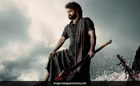

NTR
languages
Telugu
Hindi
English
Article
Nandamuri Taraka Rama Rao Jr. (born 20 May 1983), also known as Jr. N.T.R. or Tarak, is an Indian actor who primarily works in Telugu cinema. One of the highest paid Telugu film actors,[1][2] Rama Rao has won several accolades, including two Filmfare Awards, two state Nandi Awards, and four CineMAA Awards. Since 2012, he has been featured in Forbes India's Celebrity 100 list.[3]
Grandson of Telugu matinee idol, N. T. Rama Rao Sr. who was also the former Chief Minister of the Indian state of Andhra Pradesh,[4] Rama Rao appeared as a child actor in works such as Brahmarshi Viswamitra (1991), and Ramayanam (1997), the latter winning the National Film Award for Best Children's Film for that year. He made his debut as a lead actor with Ninnu Choodalani (2001). He rose to prominence with the coming-of-age film Student No. 1 (2001) and the action drama Aadi (2002).
Rama Rao established himself as a leading actor in Telugu cinema with works such as Simhadri (2003), Yamadonga (2007), Adhurs (2010), Brindavanam (2010), Baadshah (2013), Temper (2015), Nannaku Prematho (2016), Janatha Garage (2016), Jai Lava Kusa (2017), Aravinda Sametha Veera Raghava (2018), and RRR (2022), the latter being his highest-grossing release. He won two Filmfare Awards for Best Actor – Telugu for his performances in Yamadonga and Nannaku Prematho.
In 2017, he hosted the first season of the Telugu language reality TV show Bigg Boss on Star Maa. He started hosting the fifth season of Evaru Meelo Koteeswarulu in 2021 on Gemini TV.

Carrer
Rama Rao was born on 20 May 1983 to film actor and politician, Nandamuri Harikrishna and Shalini Bhaskar Rao. His father is of Telugu descent and was born and raised at Nimmakuru, in Krishna district of Andhra Pradesh.[5] His mother is a Kannadiga, who hails from Kundapur, Karnataka.[6][7] He is the grandson of Telugu actor and former Chief Minister of Andhra Pradesh, N. T. Rama Rao.[8] Initially named Tarak, he was renamed N. T. Rama Rao at the suggestion of his grandfather.[9]
Rama Rao did his schooling at Vidyaranya High School, Hyderabad, and completed his intermediate education at St. Mary's College, Hyderabad.[10] He also studied in Krishna district of Andhra Pradesh for some time.[5]
Rama Rao is a trained Kuchipudi dancer.[11] He is the half-brother of actor and producer, Nandamuri Kalyan Ram,[12] the nephew of actor and politician Nandamuri Balakrishna and former Chief Minister of Andhra Pradesh, N. Chandrababu Naidu, and the cousin of actor Taraka Ratna and politician Nara Lokesh.[13]
Movies
1991–2006: Debut and initial career
Rama Rao made his debut in the film Brahmarshi Vishwamitra (1991) as a child artiste at the age of seven. Written and directed by his grandfather N. T. Rama Rao, he played the role of Bharata. After a long gap, he then played the title role of Rama in the Gunasekhar-directed mythological film Ramayanam (1997), which won the National Film Award for Best Children's Film.[14] His performance in the film received critical appreciation.
K. Raghavendra Rao recommended Rama Rao to S. S. Rajamouli for his directorial debut, Student No. 1 (2001), during mid-2000 after being impressed with his performance in the auditions and his previous film, Ramayanam (1997). However, the film went under production for too long. He was later signed by producer Ramoji Rao, and decided to work on the romantic drama Ninnu Choodalani which marked his debut as a lead actor. By that time, he was only 17.[8] Student No. 1, which released later, went onto be successful while Subbu (2001) was a commercial failure.[15]